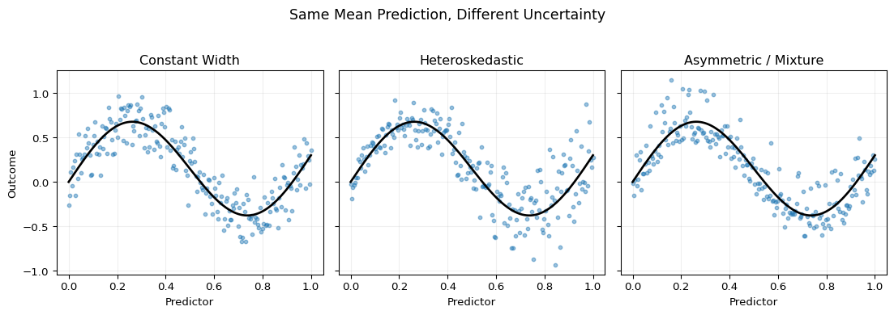
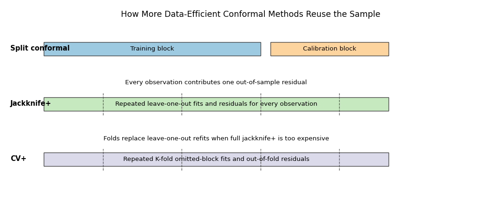
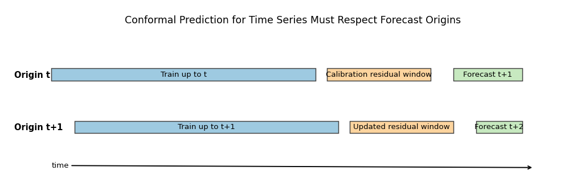

Under active development. A stable version is expected in November 2026. Feedback is very welcome.
15 Conformal Prediction
15.1 Overview
Earlier chapters studied predictive uncertainty by modeling a conditional distribution directly, for example through likelihood-based neural networks, quantile methods, or distributional forests. Conformal prediction takes a different route. It starts from any predictive model, uses nonconformity scores computed on held-out or out-of-fold data as the calibration object, and constructs prediction sets with a finite-sample marginal coverage guarantee under exchangeability (Vovk, Gammerman, and Shafer 2005; Lei et al. 2018).
For econometricians, this is useful because point forecasts alone are often not enough. A central bank may want an inflation fan chart, a risk manager may want a forecast interval for portfolio returns, and a macro forecaster may want uncertainty bands around GDP growth projections. In all of those settings, the question is not only “What is the predicted mean?” but also “How wide should a credible prediction band be?”
Conformal prediction is attractive because it is:
model-agnostic: the underlying predictor can be OLS, a forest, boosting, or a neural network
distribution-free under exchangeability: no Gaussian residual assumption is required
finite-sample: the main guarantee is not asymptotic
The guarantee is not a free lunch. It is a marginal guarantee, not a full conditional one, and it depends critically on how calibration data are chosen. That makes conformal prediction especially relevant for econometric work with heteroskedasticity, regime change, and time dependence.
15.2 Roadmap
We begin by motivating conformal prediction as a calibration layer on top of a fitted model rather than a full distribution model.
We then develop split conformal prediction in its general score-based form and specialize it to regression intervals.
Next we define exchangeability, state the finite-sample coverage result, and sketch the rank argument behind it.
We then study what basic split conformal does and does not guarantee, including the distinction between marginal and conditional coverage.
After that we cover adaptive scores, conformalized quantile regression, and data-efficient variants such as CV+ and jackknife+.
We close with conformal prediction for time series, a practical workflow for econometric applications, a summary, and exercises.
15.3 Why Conformal Prediction
The central issue is visible in Figure 15.1. All three panels use the same conditional mean function, so a point-forecast chapter would treat them identically. But the uncertainty structure is different in each case: one panel is roughly homoskedastic, one is heteroskedastic, and one has asymmetric or multimodal-looking dispersion. A good interval method should react to those differences rather than merely attach one global standard-error-style band to all cases.
Show the code
import numpy as npimport matplotlib.pyplot as pltrng = np.random.default_rng(15)x = np.linspace(0.0, 1.0, 220)m =0.6* np.sin(2* np.pi * x) +0.3* xe1 = rng.normal(0.0, 0.18, size=x.size)e2 = rng.normal(0.0, 0.07+0.28* x, size=x.size)mix = rng.uniform(size=x.size) <0.75e3 = np.where(mix, rng.normal(-0.08, 0.11, size=x.size), rng.normal(0.34, 0.18, size=x.size))y1 = m + e1y2 = m + e2y3 = m + e3fig, axes = plt.subplots(1, 3, figsize=(11.6, 3.9), sharey=True)titles = ["Constant Width", "Heteroskedastic", "Asymmetric / Mixture"]ys = [y1, y2, y3]for ax, y, title inzip(axes, ys, titles): ax.scatter(x, y, s=11, alpha=0.45, color="C0") ax.plot(x, m, color="black", linewidth=2) ax.set_title(title) ax.set_xlabel("Predictor") ax.grid(True, alpha=0.2)axes[0].set_ylabel("Outcome")fig.suptitle("Same Mean Prediction, Different Uncertainty", y=1.03, fontsize=13)plt.tight_layout()plt.show()

Figure 15.1: Three data-generating situations with the same conditional mean but different uncertainty. In all panels, the black curve is the shared conditional mean function. The left panel has roughly constant Gaussian noise, the middle panel has variance increasing with the predictor, and the right panel uses an asymmetric mixture disturbance. The figure illustrates why point predictions alone do not determine appropriate prediction intervals.
Formally, the object of interest is a prediction set \(C(x)\) such that for a new observation \((X_{n+1},Y_{n+1})\),
\[
\Pr\{Y_{n+1} \in C(X_{n+1})\} \ge 1-\alpha.
\]
The probability is taken over the joint randomness of the sample, the calibration split, and the future observation. The notation looks simple, but the content is strong: we want a finite-sample coverage guarantee without imposing a full parametric error model.
Prediction Distribution vs Conformal Calibration
Conformal prediction answers a different question from likelihood-based density models.
A distributional model tries to learn the full law of \(Y \mid X=x\).
Conformal prediction calibrates a prediction set so that it has the right marginal coverage frequency.
The first approach can be more informative when correctly specified, but it is sensitive to distributional misspecification.
The second approach is more robust as a coverage device, but it usually provides less structural information than a full predictive density.
15.4 Split Conformal Prediction
The most widely used variant is split conformal prediction, also called inductive conformal prediction. The data are partitioned into:
a training set used to fit the model or models
a calibration set used only to measure nonconformity
a test or future point for which we want a prediction set
The flow of information is summarized in Figure 15.2. The key design principle is that the calibration residuals must be computed from predictions generated by a model that did not use the calibration outcomes for fitting.
Figure 15.2: Split conformal workflow for regression. The left block is the training sample used to fit the base predictor or quantile models. The middle block is the calibration sample used only to compute nonconformity scores and the calibration quantile. The right block is the new test point, where the fitted model and calibration quantile are combined to form the final prediction interval. The direction of the arrows indicates that model fitting and calibration are separated.
The mathematically clean way to write split conformal is through a score function. Let \(D_{\text{train}}\) denote the training sample and let \(D_{\text{cal}}=\{(X_i,Y_i)\}_{i=1}^{n_{\text{cal}}}\) denote the calibration sample. Fit any model or collection of models using only \(D_{\text{train}}\), and define a nonconformity score
\[
S(x,y;D_{\text{train}}),
\]
where larger values mean that the pair \((x,y)\) looks less plausible under the fitted model. On the calibration sample, compute scores
This general form matters because the validity theorem does not depend on one special residual definition. It applies to any score that is fixed after training.
Algorithm: Split Conformal Regression
For the standard symmetric regression interval:
Split the sample into training data and calibration data.
Fit a point predictor \(\hat \mu(x)\) on the training data only.
On the calibration sample, compute absolute residual scores \[
R_i = |Y_i-\hat \mu(X_i)|.
\]
Set \[
\hat q = R_{(k)},
\qquad
k=\left\lceil (1-\alpha)(n_{\text{cal}}+1)\right\rceil.
\]
For a new point \(x\), report \[
C(x) = [\hat \mu(x)-\hat q,\hat \mu(x)+\hat q].
\]
The width is constant because the same calibration quantile \(\hat q\) is used at every \(x\).
Example: Split Conformal by Hand
Suppose the calibration residuals are
\[
\{0.2,0.4,0.7,0.9,1.1\},
\]
and the target miscoverage is \(\alpha=0.2\). Then \(n_{\text{cal}}=5\), so
This derivation is trivial algebraically, but conceptually important: the prediction interval is not produced by a Gaussian approximation. It is the inversion of a calibrated residual test.
15.5 Exchangeability and the Coverage Guarantee
The key assumption is exchangeability.
Definition: Exchangeability
A sequence \((Z_1,\dots,Z_n)\) is exchangeable if its joint distribution is invariant to permutation. For every permutation \(\pi\),
IID data are exchangeable, but exchangeability is slightly weaker because it does not require independence.
In conformal prediction, the objects being permuted are usually the pairs \(Z_i=(X_i,Y_i)\). Under exchangeability and a clean train/calibration split, the calibration scores and the future score are exchangeable once the score function has been fixed using the training part only.
Theorem: Split Conformal Coverage
Suppose an exchangeable sample has been split into a training part \(D_{\text{train}}\), a calibration part \((X_i,Y_i)\) for \(i=1,\dots,n_{\text{cal}}\), and one future point \((X_{n_{\text{cal}}+1},Y_{n_{\text{cal}}+1})\). Suppose the score function \(S(\cdot,\cdot;D_{\text{train}})\) is fully determined by \(D_{\text{train}}\) and then kept fixed when evaluating calibration and future points. Define
The proof is a rank argument, but it is worth spelling out because the entire finite-sample result comes from it. Once the training subset has been chosen and the score function has been fitted on that subset, the training data are no longer random objects inside the proof. What remains random are the calibration points and the future point, and those still enter symmetrically. Conditional on the realized training data, the scores
are exchangeable. If ties are absent, the rank of the future score \(R_{n_{\text{cal}}+1}\) among these \(n_{\text{cal}}+1\) values is uniformly distributed on \(\{1,\dots,n_{\text{cal}}+1\}\). Writing
With ties, one can imagine applying an infinitesimal random tie-breaker to make the ranks strict. The order-statistic rule above is then conservative because the event \(R_{n_{\text{cal}}+1}\le R_{(k)}\) contains all cases in which the randomized rank is at most \(k\). This is the core reason conformal prediction is finite-sample and distribution-free: the proof uses only exchangeability and ranks, not a parametric error law.
One useful mathematical consequence is that validity is separated from efficiency. If the score function is badly chosen, intervals can be unnecessarily wide, but marginal coverage still holds. Better base models and better scores mainly improve length, not validity.
Question for Reflection
Why does the split conformal theorem not require the forecasting model to be correctly specified?
Suggested Answer
Because the proof is based on the rank of the future score among calibration and future scores. That rank argument uses exchangeability, not correctness of the model. A poor model can make intervals wide or uninformative, but it does not by itself destroy the marginal coverage guarantee.
15.6 What Basic Split Conformal Does and Does Not Guarantee
The theorem is strong, but it is important to read it correctly.
Marginal coverage. The guarantee applies on average over the full distribution of \((X,Y)\). If we target 90% coverage, the average long-run inclusion frequency across all future points is at least 90%.
Not conditional coverage. The theorem does not imply
This distinction matters for econometrics because uncertainty often differs sharply across subgroups, regimes, income levels, leverage levels, or business-cycle states. A method can achieve nominal marginal coverage while still undercovering in high-volatility regions and overcovering in quiet regions.
This is not just a verbal warning. For constant-width intervals, the failure of exact conditional coverage under heteroskedasticity can be shown directly.
Proposition: Constant-Width Coverage Cannot Be Conditionally Exact Under Heteroskedasticity
Suppose
\[
Y=\mu(X)+\sigma(X)\varepsilon,
\]
where \(\varepsilon\) is independent of \(X\), has a continuous symmetric distribution, and \(\sigma(X)\) is not almost surely constant. Consider a constant-width interval centered at the conditional mean,
so the conditional coverage depends on \(x\) whenever \(\sigma(x)\) varies with \(x\). Therefore this constant-width interval centered at \(\mu(x)\) can match the target only on average; it cannot generally deliver the same exact conditional coverage level for all \(x\).
If the distribution of \(|\varepsilon|\) has a continuous CDF, that CDF is strictly increasing on its support. Hence the conditional coverage changes with \(q/\sigma(x)\) and therefore with \(x\) whenever \(\sigma(x)\) is not constant. This is the formal reason a constant-width split conformal interval struggles in heteroskedastic settings.
That phenomenon is illustrated in Figure 15.3. The left panel shows a heteroskedastic data-generating process and a constant-width interval centered at the true conditional mean. The right panel then shows that local coverage varies with the predictor even though the average coverage is close to the target. The point is not that conformal fails. The point is that marginal validity is weaker than conditional validity.
Figure 15.3: Marginal versus conditional coverage under heteroskedasticity. In the left panel, the black curve is the conditional mean and the shaded band is a constant-width interval calibrated to achieve about 90% coverage on average. The data are heteroskedastic, with dispersion increasing in the predictor. The right panel plots local coverage estimated in moving bins of the predictor. The dashed horizontal line marks nominal 90% coverage. Average coverage can be near target even when local coverage is too high in low-variance regions and too low in high-variance regions.
This is one reason the Evaluating Predictive Distributions chapter remains relevant. Coverage is not the whole story. Interval width, sharpness, and subgroup behavior still matter. Conformal prediction gives a strong calibration guarantee, but it does not exempt us from checking whether the intervals are informative and where they may fail.
The other main limitation is data efficiency. In split conformal, the calibration observations are not used to fit the predictive model. If data are scarce, the base model can become worse and the resulting intervals can widen.
15.7 Adaptive and Asymmetric Conformal Intervals
The simplest split conformal interval has constant width. That is often unrealistic in economic data, where forecast uncertainty changes with leverage, income, business-cycle state, or liquidity conditions.
One way to fix this is to keep the split conformal logic but change the score.
Adaptive symmetric scores. Suppose we train both a point predictor \(\hat \mu(x)\) and a positive scale predictor \(\hat \sigma(x)\) on the training sample only. We then define
The resulting interval is still symmetric around the point forecast, but its width now adapts with \(x\) through \(\hat \sigma(x)\).
Mathematically, the validity theorem is unchanged. Split conformal does not care whether \(S(x,y)\) was built from an absolute residual, a normalized residual, or something more elaborate. If the score, including \(\hat \sigma(x)\), was fixed using training data only, the same rank argument applies. What changes is interval efficiency.
Conformalized Quantile Regression. Symmetry may still be too restrictive. In downside-risk problems, the lower and upper tails need not move together. Conformalized quantile regression (CQR) starts with two quantile predictors, a lower one \(\hat q_{\mathrm{low}}(x)\) and an upper one \(\hat q_{\mathrm{high}}(x)\), and calibrates them using the score (Romano, Patterson, and Candes 2019)
This looks simple, but it is conceptually different from basic split conformal. The width already varies with \(x\) before calibration, because the lower and upper quantile models can respond differently to heteroskedasticity and asymmetry.
The logic is visualized in Figure 15.4. The dashed band is the raw quantile-regression interval. The solid band is the conformalized version after applying the calibration correction \(\hat q\) to the lower and upper sides. In the figure the adjustment widens the band because \(\hat q>0\). More generally, the conformal step can either widen or shrink the initial band depending on the calibration scores.
Figure 15.4: Conformalized quantile regression in a heteroskedastic setting. The dashed curves are the initial lower and upper quantile predictions from a quantile model. The solid curves are the conformalized bounds after subtracting and adding the calibration correction term (q). The widening is largest where the underlying quantile band is already wide, so the final interval remains adaptive rather than constant-width.
Question for Reflection
When would conformalized quantile regression be preferable to symmetric split conformal intervals?
Suggested Answer
CQR is preferable when uncertainty is clearly heteroskedastic or asymmetric, so a constant-width symmetric band would be implausible. By starting from lower and upper quantile models, CQR can adapt interval width and skewness across the predictor space before conformal calibration corrects the overall coverage.
15.8 Real Data Example: Quarterly GDP Growth with FRED-QD
The chapter is easier to interpret once we see the methods on real macroeconomic data. We therefore use the quarterly U.S. macro panel in data/fred_qd_current.csv, which is a local copy of the current FRED-QD release from the St. Louis Fed. The target is next-quarter annualized real GDP growth, constructed from GDPC1. The predictors are current-quarter macro and financial indicators: lagged GDP growth, lagged CPI inflation, the unemployment rate, the federal funds rate, the term spread, and a log volatility proxy based on VIXCLSx.
This is still an illustration rather than a literal application of the split-conformal theorem. Quarterly macro data are time ordered and are not exchangeable. So the point of the example is practical: it shows how to adapt the chapter’s logic to a forecasting design that respects time order, and it shows again why overall coverage can differ from subgroup coverage.
To keep the empirical section transparent, we use only one method here: a split conformal interval around a random-forest point forecast. The sample is divided chronologically:
This split produces 149 training quarters, 47 calibration quarters, and 53 test quarters. Overall test coverage is about 94%, which is slightly above the nominal 90% target. That is plausible because conformal coverage is finite-sample discrete, so mild overcoverage is common. The average interval width is about 13.7 annualized growth points, and the point-forecast MAE is about 3.15 points.
The more revealing result is the subgroup comparison. If we classify the top quintile of test quarters by lagged VIX as high-volatility quarters, coverage falls to about 82% in that subgroup. That is exactly the lesson from the earlier theory discussion: marginal coverage can look adequate even though the method undercovers in a practically important regime.
Figure Figure 15.5 makes the same point visually. The left panel plots the split-conformal band over the test period. The right panel compares overall coverage with the coverage in the high-VIX subgroup. The nominal 90% line is included so the interpretation stays tied to the calibration target rather than to a vague notion of “good” performance.
Figure 15.5: Time-aware split conformal illustration using quarterly U.S. macro data from FRED-QD. The left panel shows the test-period one-quarter-ahead GDP-growth forecasts from the random-forest point predictor together with the split-conformal interval based on calibration residuals from 2000Q1-2011Q4. Black dots are realized next-quarter annualized GDP growth rates, and red markers indicate misses where the realization falls outside the conformal interval. The right panel compares empirical coverage over the full 2012 onward test sample with coverage in the highest-VIX quintile of test quarters. The dashed horizontal line marks the nominal 90% target.
This example should not be overread. It is not a theorem check for dependent data, and it is not meant as a horse race among conformal variants. Its purpose is narrower: to show how a manual conformal workflow looks in a realistic macro forecasting design, and to make the distinction between overall coverage and regime-specific coverage concrete before we move on to more data-efficient conformal variants.
15.9 Improving Data Efficiency: CV+ and Jackknife+
Split conformal uses one part of the sample for fitting and another for calibration. This clean separation makes the theory easy, but it can waste data when the sample is small.
The key pedagogical point is that split conformal uses one global calibration quantile computed from a held-out set. Jackknife+ and CV+ use a different idea: they generate an out-of-sample residual for every observation, then transport each of those residuals to the new predictor value through the model that excluded that observation.
This comparison is shown in Figure 15.6. Split conformal pays for its clean theory by holding back a calibration sample. Jackknife+ instead fits many leave-one-out models so that every observation contributes one out-of-sample residual without being permanently removed from model fitting. CV+ keeps the same logic but replaces leave-one-out fitting by \(K\)-fold omitted blocks.
Show the code
import matplotlib.pyplot as pltfrom matplotlib.patches import Rectanglefig, ax = plt.subplots(figsize=(11.2, 4.8))ax.set_xlim(0, 100)ax.set_ylim(0, 15)ax.axis("off")rows = [ (11.2, "Split conformal", [(8, 44, "Training block", "#9ecae1"), (54, 24, "Calibration block", "#fdd49e")]), (7.1, "Jackknife+", [(8, 70, "Repeated leave-one-out fits and residuals for every observation", "#c7e9c0")]), (3.0, "CV+", [(8, 70, "Repeated K-fold omitted-block fits and out-of-fold residuals", "#dadaeb")]),]for y, label, blocks in rows: ax.text(1.2, y +0.55, label, ha="left", va="center", fontsize=11, fontweight="bold")for x0, width, text, color in blocks: rect = Rectangle((x0, y), width, 1.0, facecolor=color, edgecolor="0.25", linewidth=1.0) ax.add_patch(rect) ax.text(x0 + width /2, y +0.5, text, ha="center", va="center", fontsize=10)for xpos in [20, 36, 52, 68]: ax.plot([xpos, xpos], [6.8, 8.4], color="0.35", linestyle="--", linewidth=1.0) ax.plot([xpos, xpos], [2.7, 4.3], color="0.35", linestyle="--", linewidth=1.0)ax.text(50, 14.1, "How More Data-Efficient Conformal Methods Reuse the Sample", ha="center", fontsize=13)ax.text(43, 9.1, "Every observation contributes one out-of-sample residual", fontsize=10, ha="center")ax.text(43, 4.9, "Folds replace leave-one-out refits when full jackknife+ is too expensive", fontsize=10, ha="center")plt.tight_layout()plt.show()

Figure 15.6: Data usage in split conformal, jackknife+, and CV+. The first row shows split conformal, where one block is reserved for calibration and never used for fitting the base model. The second row shows jackknife+, where each observation is omitted once, producing one out-of-sample residual per observation. The third row shows CV+, where folds rather than single observations are omitted. The figure is schematic: the repeated blue and orange blocks indicate many repeated refits, not one single partition.
Split Conformal vs Jackknife+
The easiest way to understand the difference is:
Split conformal fits one model and calibrates it on a held-out sample.
Jackknife+ fits many leave-one-out models and lets every observation contribute one out-of-sample residual.
CV+ keeps the same logic as jackknife+ but replaces leave-one-out refits by \(K\)-fold refits.
That is why jackknife+ and CV+ use many candidate lower and upper bounds, not one single residual quantile.
Jackknife+ is the cleanest bridge from split conformal to these more data-efficient methods, so it is best to understand that case first (Barber et al. 2021).
Suppose we have observations \((X_i,Y_i)\) for \(i=1,\dots,n\). For each \(i\), fit a leave-one-out model \(\hat \mu^{(-i)}\) using all data except observation \(i\). Then compute the leave-one-out residual
\[
R_i = |Y_i-\hat \mu^{(-i)}(X_i)|.
\]
For a new predictor value \(x\), the omitted-observation-\(i\) model implies the candidate lower and upper bounds
The jackknife+ interval is then obtained by taking an empirical lower quantile of the \(L_i(x)\) values and an empirical upper quantile of the \(U_i(x)\) values:
The construction is the key lesson. Each omitted-observation fit produces its own lower and upper bound at the new point, and the final interval comes from the empirical spread of those candidate bounds.
CV+ is now easy to interpret: it uses the same idea as jackknife+, but with omitted folds instead of omitted single observations.
Let the sample be partitioned into folds \(I_1,\dots,I_K\). For each fold \(k\), fit a model \(\hat \mu^{(-k)}\) on all observations not in \(I_k\). For any observation \(i\in I_k\), define the out-of-fold residual
\[
R_i = |Y_i-\hat \mu^{(-k)}(X_i)|.
\]
Every observation now receives a score computed from a model that did not train on it. For a new predictor value \(x\), define the lower and upper candidate bounds
A formal CV+ interval is then obtained by taking an empirical lower quantile of the \(L_i(x)\) values and an empirical upper quantile of the \(U_i(x)\) values:
with the convention that \(L_{(0)}(x)=-\infty\) if \(\lfloor \alpha(n+1)\rfloor=0\). Jackknife+ is the leave-one-out special case obtained by setting \(K=n\).
So the operational difference is not conceptual but computational:
jackknife+ omits one observation at a time
CV+ omits one fold at a time
both methods propagate out-of-sample residuals into lower and upper candidate bounds at the new point
These methods often tighten intervals because the base models use more data than in a single split while the residuals remain out-of-sample. Jackknife+ in particular comes with a finite-sample marginal coverage result under exchangeability for broad classes of fitted predictors. CV+ follows the same construction logic with \(K\)-fold refits, but the chapter should not be read as claiming that every CV+ variant automatically inherits exactly the same theorem in exactly the same form (Barber et al. 2021). The practical tradeoff is computational cost. In econometric forecasting settings with expensive rolling validation, that cost can be substantial.
15.10 Conformal Prediction for Time Series
Time series are where econometricians need to be most careful. The standard split conformal theorem assumes exchangeability, but time-ordered data are usually not exchangeable because of serial dependence, structural change, seasonality, and volatility clustering.
then the vector \((Y_1,Y_2,Y_3)\) does not generally have the same distribution as \((Y_1,Y_3,Y_2)\), because the covariance between adjacent observations is \(\rho \sigma_Y^2\) while the covariance at lag two is \(\rho^2 \sigma_Y^2\). Permuting the entries changes the covariance structure. So the rank argument from split conformal no longer applies automatically.
In practice, the right design is closer to the logic of Time Series Cross-Validation. Forecasts should be generated using only information available up to the forecast origin, and calibration residuals should come from past out-of-sample forecast errors rather than random reshuffling.
A simple rolling conformal workflow is:
At each forecast origin \(t\), fit the forecasting model using data up to time \(t\).
Store recent out-of-sample absolute residuals \[
R_s = |Y_s-\hat \mu_{s-1}(X_s)|,
\] where each \(\hat \mu_{s-1}\) is trained only on information available before time \(s\).
Form the interval for \(t+1\) as \[
C_t(X_{t+1})
=
[\hat \mu_t(X_{t+1})-\hat q_t,\hat \mu_t(X_{t+1})+\hat q_t],
\] where \(\hat q_t\) is the empirical \((1-\alpha)\)-quantile of a recent residual window.
This procedure is no longer distribution-free in the same finite-sample sense as IID split conformal, but it is aligned with the information structure of forecasting. If the residual process is locally stable, the recent residual quantile can still serve as a useful calibration device.
Ensemble batch prediction intervals (EnbPI) take this idea further by combining ensemble forecasts with time-ordered residual calibration (Xu and Xie 2021). The spirit is similar to CV+:
fit many bootstrap-style models on past data
aggregate their predictions
calibrate using out-of-sample residuals from the aggregate predictor
The time-series design is shown in Figure 15.7. Training, calibration, and forecasting move forward together over time. This is the right mental model for macroeconomic and financial forecasting. Conformal intervals should be built from historical forecast errors that would actually have been available in real time.
Show the code
import matplotlib.pyplot as pltfrom matplotlib.patches import Rectanglefig, ax = plt.subplots(figsize=(10.8, 3.6))ax.set_xlim(0, 100)ax.set_ylim(0, 12)ax.axis("off")rows = [ (7.0, "Origin t", [(8, 46, "Train up to t", "#9ecae1"), (56, 18, "Calibration residual window", "#fdd49e"), (78, 12, "Forecast t+1", "#c7e9c0")]), (3.5, "Origin t+1", [(12, 46, "Train up to t+1", "#9ecae1"), (60, 18, "Updated residual window", "#fdd49e"), (82, 8, "Forecast t+2", "#c7e9c0")]),]for y, label, blocks in rows: ax.text(1.5, y +0.35, label, ha="left", va="center", fontsize=11, fontweight="bold")for x0, width, text, color in blocks: rect = Rectangle((x0, y), width, 0.8, facecolor=color, edgecolor="0.25", linewidth=1.1) ax.add_patch(rect) ax.text(x0 + width /2, y +0.4, text, ha="center", va="center", fontsize=10)ax.annotate("time", xy=(92, 1.2), xytext=(8, 1.2), arrowprops={"arrowstyle": "->", "linewidth": 1.4})ax.text(50, 10.8, "Conformal Prediction for Time Series Must Respect Forecast Origins", ha="center", fontsize=13)plt.tight_layout()plt.show()

Figure 15.7: Rolling conformal calibration for time-series forecasting. The blue block is the model-training history available at the current forecast origin. The orange block contains past out-of-sample forecast errors used as the calibration window. The green block is the next forecast target. As time moves forward, the training and calibration windows roll, so interval construction respects temporal order instead of permuting observations randomly.
Question for Reflection
Why is it not enough to keep a random calibration set separate from training when the data are a time series?
Suggested Answer
Because the problem is not only data reuse. A random calibration split can mix future and past observations, so the calibration residuals no longer mimic genuine forecast errors at a real forecast origin. Even if training and calibration are disjoint, the resulting conformal quantile can still be based on an invalid information structure.
15.11 Practical Workflow for Econometricians
For applied work, the right conformal design depends on the data structure and the research goal.
If the data are approximately exchangeable and sample size is adequate. Basic split conformal is often a strong default. It is easy to explain, easy to compute, and its finite-sample guarantee is transparent.
If uncertainty clearly varies with covariates. Use an adaptive score or CQR rather than constant-width intervals. The guarantee is still marginal, but the intervals can become much sharper in quiet regions and more cautious in volatile ones.
If data are scarce and model fitting is expensive but feasible multiple times. Consider CV+ or jackknife+. The extra computation may be worthwhile if split conformal wastes too much training information.
If the data are time ordered. Do not use standard split conformal mechanically. Use a forecasting design that respects time order, calibration on past out-of-sample errors, and, when appropriate, time-series conformal methods such as EnbPI.
Evaluate more than raw coverage. Coverage should be checked together with interval width and stability across relevant subgroups or regimes. A method that attains 95% coverage by giving nearly uselessly wide intervals may satisfy the theorem and still fail the applied forecasting task.
This chapter therefore complements rather than replaces Chapter 3. Proper scores and distributional evaluation remain useful when the researcher cares about the whole predictive distribution, not only coverage. Conformal prediction is a calibration layer, not a universal substitute for all distributional modeling.
15.12 Summary
Key Takeaways
Conformal prediction calibrates prediction sets around a fitted model rather than estimating a full predictive distribution directly.
Under exchangeability and a clean train/calibration separation, split conformal prediction delivers a finite-sample marginal coverage guarantee.
The guarantee comes from a rank argument and does not require the underlying forecasting model to be correctly specified.
Basic split conformal intervals are constant-width and guarantee only marginal, not conditional, coverage.
Adaptive scores and conformalized quantile regression improve interval shape and heteroskedastic adaptation without changing the basic calibration logic.
CV+ and jackknife+ improve data efficiency by using out-of-fold residuals instead of one train/calibration split.
In time series, naive conformal prediction loses its usual guarantee because exchangeability fails, so calibration must respect forecast origins and temporal dependence.
Common Pitfalls
Confusing marginal coverage with conditional or subgroup coverage.
Thinking conformal prediction validates a poor model rather than only recalibrating its prediction set.
Using the calibration sample during model fitting or hyperparameter tuning.
Treating constant-width split conformal intervals as adequate when heteroskedasticity is central.
Applying IID conformal methods directly to time-series data with serial dependence or regime change.
Judging interval quality by coverage alone while ignoring width and subgroup behavior.
15.13 Exercises
Exercise 15.1: Split Conformal Coverage and Regime-Specific Coverage
You use split conformal prediction with target miscoverage rate \(\alpha=0.1\) to forecast quarterly GDP growth. The calibration sample has \(n_{\text{cal}}=19\) observations. After fitting a point predictor \(\hat \mu\) on the training sample, you compute the absolute residual scores on the calibration sample. Their sorted values are
Compute the conformal rank index \[
k=\left\lceil (1-\alpha)(n_{\text{cal}}+1)\right\rceil
\] and the conformal quantile \(\hat q\).
If \(\hat \mu(x_{\text{new}})=5.0\), compute the 90% split conformal prediction interval for a new point \(x_{\text{new}}\).
Assume the calibration scores and future score are almost surely distinct. Using the uniform-rank argument, compute the exact coverage probability of this split conformal rule and the numerical gap between this exact coverage and the nominal target \(1-\alpha\).
In a later evaluation exercise, the overall empirical coverage is close to 90%, but coverage is only 75% during recession quarters and 95% during expansion quarters. Explain why this does not contradict the split conformal theorem, and name one modification from the chapter that would be a natural next step.
Exam level. Parts 1-3 combine conformal mechanics with the finite-sample rank argument, and Part 4 tests whether students understand the difference between marginal and regime-specific coverage.
Hint for Part 3
If ranks are uniform on \(\{1,\dots,n_{\text{cal}}+1\}\) and coverage occurs when the future score has rank at most \(k\), then the coverage probability is \(k/(n_{\text{cal}}+1)\).
Hint for Part 4
The theorem is about marginal coverage over the full distribution, not exact coverage inside every subgroup or regime.
If the scores are distinct, the rank of the future score among the 20 scores is uniform on \(\{1,\dots,20\}\). Coverage occurs when the future score has rank at most \(k=18\). Therefore
So the exact coverage is 90%, which equals the target \(1-\alpha=0.9\) in this case. The numerical gap between exact and nominal coverage is therefore
\[
0.9-0.9=0.
\]
In general the ceiling rule can create slight overcoverage, but in this particular example it hits the nominal target exactly.
Part 4: Regime-specific undercoverage
This does not contradict the split conformal theorem because the theorem guarantees marginal coverage over the full distribution of future observations, not exact coverage within every subgroup or regime. Recession quarters may have higher forecast uncertainty than expansion quarters, so a constant-width interval can undercover in recessions and overcover in expansions while still averaging out to roughly 90% overall coverage.
A natural next step from the chapter is to use an adaptive conformal score or conformalized quantile regression, because both allow interval width to adjust with covariates or state-dependent uncertainty rather than staying constant across all quarters.
Exercise 15.2: Conformalized Quantile Regression and Calibration Direction
You use conformalized quantile regression with target coverage 80%, so \(\alpha=0.2\), to build downside-risk intervals for firm-level returns. The calibration sample has four observations, and the lower-quantile prediction, upper-quantile prediction, and realized outcome are:
Observation
\(\hat q_{\mathrm{low}}(x_i)\)
\(\hat q_{\mathrm{high}}(x_i)\)
\(y_i\)
1
10
20
12
2
15
25
26
3
20
40
18
4
22
32
25
Compute the four CQR scores \[
R_i = \max\{\hat q_{\mathrm{low}}(x_i)-y_i,\; y_i-\hat q_{\mathrm{high}}(x_i)\}.
\]
Compute the conformal quantile \(\hat q\).
For a new point \(x_{\text{new}}\), suppose \[
\hat q_{\mathrm{low}}(x_{\text{new}})=30,
\qquad
\hat q_{\mathrm{high}}(x_{\text{new}})=50.
\] Compute the final conformalized interval.
Show algebraically that the set \[
\{y:\max(\hat q_{\mathrm{low}}(x)-y,\; y-\hat q_{\mathrm{high}}(x))\le \hat q\}
\] is equal to \[
[\hat q_{\mathrm{low}}(x)-\hat q,\hat q_{\mathrm{high}}(x)+\hat q].
\]
Compare the raw interval \([30,50]\) with the conformalized interval from Part 3. Did the conformal step widen or shrink the band, and what does the sign of \(\hat q\) say about the quality of the raw quantile band on the calibration sample?
Suppose the method still undercovers for highly leveraged firms while hitting 80% overall coverage in the full sample. Explain why this does not contradict the chapter’s theory, and give one diagnostic or modification from the chapter to consider.
Exam level. Parts 1-4 cover the mechanics and algebra of CQR, while Parts 5-6 test whether students can interpret the conformal correction and understand subgroup undercoverage.
Hint for Part 1
The score is positive when the realized value lies outside the initial quantile band and negative when it lies comfortably inside.
Hint for Part 4
The inequality \(\max(a,b)\le c\) is equivalent to imposing both \(a\le c\) and \(b\le c\).
Hint for Part 6
Again distinguish marginal coverage from subgroup or conditional coverage. Then ask whether a more adaptive interval construction is needed.
So the conformal step widens the band. Because \(\hat q=2>0\), the calibration sample indicates that the raw quantile band was too narrow to achieve the target coverage and needed outward adjustment.
Part 6: Subgroup undercoverage
This does not contradict the theory because the chapter’s conformal guarantee is marginal. It applies on average over the full population, not necessarily within the subgroup of highly leveraged firms. If leverage is associated with a different uncertainty structure, the overall 80% coverage can coexist with subgroup undercoverage.
A natural diagnostic is to check coverage separately by leverage group or by bins of a risk proxy. A natural methodological response is to use a more adaptive interval construction or to enrich the quantile model so that the lower and upper quantile predictors respond more strongly to state-dependent risk.
Exercise 15.3: Jackknife+ by Hand
Suppose you have \(n=4\) observations and target miscoverage \(\alpha=0.2\). For a new point \(x_{\text{new}}\), the four leave-one-out models produce
Compute the four candidate lower bounds \(L_i(x_{\text{new}})\) and upper bounds \(U_i(x_{\text{new}})\), sort them, and compute the jackknife+ interval.
Suppose instead that all four leave-one-out predictions at \(x_{\text{new}}\) were equal to the same value \(m\). Show that with \(n=4\) and \(\alpha=0.2\), the jackknife+ interval reduces to \[
[m-\max_i R_i,\;m+\max_i R_i].
\]
Explain why jackknife+ is more data-efficient than split conformal.
In a small cross-sectional macro dataset where model fitting is cheap but the sample size is limited, when would jackknife+ be more attractive than split conformal?
Exam level. Parts 1-2 require students to work through the jackknife+ construction formally, and Parts 3-4 test whether they understand the efficiency-computation tradeoff in an applied setting.
Hint for Part 2
If all leave-one-out predictions equal \(m\), then the candidate bounds become \(m-R_i\) and \(m+R_i\). With \(n=4\) and \(\alpha=0.2\), the lower index is 1 and the upper index is 4.
Hint for Part 4
Think about the tradeoff between holding back a dedicated calibration sample and fitting many models on almost the full sample.
If all leave-one-out predictions are equal to \(m\), then
\[
L_i=m-R_i,
\qquad
U_i=m+R_i.
\]
The sorted lower bounds run from the smallest value \(m-\max_i R_i\) upward, while the sorted upper bounds run from the smallest value \(m+\min_i R_i\) up to the largest value \(m+\max_i R_i\).
With \(n=4\) and \(\alpha=0.2\), the lower index is 1 and the upper index is 4, so
Split conformal permanently reserves a calibration sample and does not use those observations to fit the base model. Jackknife+ instead fits many leave-one-out models, so every observation contributes to model fitting in almost every refit and also contributes one out-of-sample residual. That is why it often uses scarce data more efficiently.
Part 4: When jackknife+ is attractive
Jackknife+ is especially attractive when sample size is limited, because sacrificing a dedicated calibration block could noticeably weaken the fitted model. If model fitting is cheap enough that many leave-one-out refits are feasible, the extra computation is worth paying to avoid throwing away training information.
Exercise 15.4: Conformal Prediction with Dependent Data
Suppose \((Y_t)\) follows a stationary AR(1) process
Show that the vector \((Y_1,Y_2,Y_3)\) is generally not exchangeable when \(\rho \neq 0\) by comparing the covariance between the first and second entries of \((Y_1,Y_2,Y_3)\) with the covariance between the first and second entries of the permuted vector \((Y_1,Y_3,Y_2)\).
Explain why this invalidates the usual finite-sample split conformal guarantee if one simply randomizes a calibration split from the time series.
You are forecasting monthly inflation. Describe a rolling conformal design that respects forecast origins and explain one reason why the calibration window should not be too short and one reason why it should not be too long.
Suppose inflation volatility rises sharply after an energy-price shock, but the conformal interval still uses a very long calibration window dominated by pre-shock residuals. Would you expect undercoverage or overcoverage after the shock, and why?
Exam level. Part 1 is a formal dependence argument, Part 2 links it to the conformal rank proof, and Parts 3-4 ask for time-series conformal designs grounded in econometric forecasting practice.
Hint for Part 1
For a stationary AR(1), \(\operatorname{Cov}(Y_t,Y_{t+h})=\rho^{|h|}\operatorname{Var}(Y_t)\).
Hint for Part 3
The calibration residuals should be genuine past forecast errors computed with only past information. A very short window is noisy; a very long window may mix together different regimes.
Hint for Part 4
Ask whether pre-shock residuals are likely to be smaller or larger than post-shock forecast errors when volatility rises abruptly.
These are equal only in special cases such as \(\rho=0\). For generic \(\rho \neq 0\), the covariance structure changes under permutation, so the joint distribution is not invariant to permutation. Hence the process is not exchangeable.
Part 2: Why naive split conformal breaks
The split conformal proof relies on the calibration scores and future score being exchangeable, so that the future score has a uniform rank among them. In a time series, random splitting does not restore exchangeability. The calibration residuals can mix observations from different times, different volatility states, and even future information relative to earlier forecast origins. Once the scores are no longer exchangeable, the uniform-rank argument fails, so the usual finite-sample coverage theorem no longer applies.
Part 3: Rolling conformal design
At each month \(t\):
Fit the forecasting model using only data available up to month \(t\).
Produce the forecast for month \(t+1\).
Store the realized out-of-sample absolute forecast error once \(Y_{t+1}\) becomes available.
Form the conformal interval for month \(t+2\) using the empirical \((1-\alpha)\)-quantile of a recent window of past forecast errors.
The calibration window should not be too short because then the empirical quantile is unstable and sensitive to a few unusually large or small forecast errors. It should not be too long because old residuals may come from different policy regimes, volatility states, or structural relationships and therefore be unrepresentative of current forecast uncertainty.
Part 4: Regime change and long windows
If volatility rises sharply after the shock but the calibration window is dominated by pre-shock residuals, then the conformal quantile will typically be too small relative to current forecast uncertainty. That leads to undercoverage after the shock, because the interval is calibrated on a calmer historical regime than the one currently faced by the forecaster.
15.14 References
Barber, Rina Foygel, Emmanuel J. Candes, Aaditya Ramdas, and Ryan J. Tibshirani. 2021. “Predictive Inference with the Jackknife+.”Annals of Statistics 49 (1): 486–507. https://doi.org/10.1214/20-AOS1965.
Lei, Jing, Max G’Sell, Alessandro Rinaldo, Ryan J. Tibshirani, and Larry Wasserman. 2018. “Distribution-Free Predictive Inference for Regression.”Journal of the American Statistical Association 113 (523): 1094–1111. https://doi.org/10.1080/01621459.2017.1307116.
Romano, Yaniv, Evan Patterson, and Emmanuel J. Candes. 2019. “Conformalized Quantile Regression.” In Advances in Neural Information Processing Systems 32, 3538–48.
Vovk, Vladimir, Alexander Gammerman, and Glenn Shafer. 2005. Algorithmic Learning in a Random World. New York: Springer.
Xu, Chen, and Yao Xie. 2021. “Conformal Prediction Interval for Dynamic Tme-Series.”Proceedings of Machine Learning Research 139.